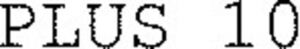

Trade Mark Journal No.2025/046 14 November 2025
WO0000001883024 (1,2,4)
Office of origin: France
Date of International Registration:12 September 2025
Date of designation in the UK:
12 September 2025

International priority date claimed: 13 March 2025
(France)
(5129272)
- Class 1
- Chemical products for use in industry, particularly chemical compound mixtures for manufacture of corrosion-resistant coatings and coverings for metal surfaces; chemicals for use in industry, in particular chemical compounds of mixtures for the manufacture of coatings and cladding having chemical and thermal resistance properties; chemical surface coatings resistant to weathering, chemical splashing and high temperatures, other than paints; chemical compositions for surface coatings other than paints; adhesives for use in industry; galvanizing baths; degreasing preparations used in manufacturing processes; chemical preparations for coatings applied on metal object surfaces; water-resistant protective coatings for surfaces [chemicals, except for paints]; mordants for metals.
- Class 2
- Varnishes, lacquers, paints; anti-rust products; anti-rust oils; protective products for metals; adhesive coatings (paints) resistant to corrosion for use on metal substrates; anti-corrosive products; anti-corrosive coatings (paints), preservatives against rust; corrosion-resistant coating compounds for metal surfaces; dyestuffs; mordants; metals in foil and/or powder form for painting, decoration, printing and art work; coatings for finishing of surfaces [paints or oils or varnishes]; coating materials (paints); coating materials in oil form; surface coatings in the form of paints, varnishes or lacquers; protective coatings with chemical and thermal resistance properties [paints]; surface-coating products for protection against corrosion and/or abrasion; resins for coating purposes; topcoats with high solid content; conversion coatings [paints]; surface coatings [paints]; surface protection coatings [paints].
- Class 4
- Industrial oils and greases; lubricants; dust absorbing, wetting and binding compositions; lubricating compounds for use on metal supports.
NOF METAL COATINGS EUROPE
Representative: Monsieur Doucerain Axel ATLANTIP, 39 Rue du Calvaire de Grillaud, F-44100 Nantes, FRANCE